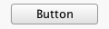

We currently support Mac-style properties on buttons to make them look different when used on our background gradient and to segment them. See Apple Technical Note TN2196 for more information.
We plan on more use of client properties to control the appearance of controls.
We support the JComponent.sizeVariant property with
values of "large", "regular" (the default),
"small", and "mini". See the table for
examples:
| JComponent.sizeVariant | "large" | "regular" | "small" | "mini" |
|---|---|---|---|---|
| Push Button |

|

|

|

|
| Check Box |

|

|

|
|
| Radio Button |

|

|

|
If the value "scale" is specified, then the button
height is not constrained and will scale smoothly. Otherwise it is
forced into one of the sizes above, and centered in the control's
height.
Use the JButton.buttonType property with values of
"textured", "segmented", or
"segmentedTextured". To segment the buttons, set the
JButton.segmentPosition property to one of
"first", "middle", or "last". The
value "only" is also supported.
See the table below for examples:
| Button style | first | middle | last | only |
|---|---|---|---|---|
| segmented |

|

|

|
|
| segmentedTextured |

|

|

|
 |
We support a "unified tool bar" look by setting the
SeaGlass.UnifiedToolbarLook property to
Boolean.TRUE on the root pane or the internal frame. This
will paint the background of the root pane's content pane with a
gradient that meshes with the title pane, and it will call
setOpaque(false) on the content pane. Without this you will
have a very light gray background on the contents. On a Mac, this causes
the apple.awt.brushMetalLook property to be set.
On a non-Mac platform, setting the
JRootPane.MenuInTitle property to Boolean.TRUE
will place the menu bar in the title bar instead of below it. Note that
it is your responsibility to make sure that it fits with the
title.
On the Mac platform, we support the root pane property
Window.documentModified such that if it is set to
Boolean.TRUE the close button will have a bullet in it,
indicating that the document has been modified.
On a scroll bar, setting the
SeaGlass.Override.ScrollBarButtonsTogether property to
Boolean.TRUE will place the scroll bar buttons together at
the left or bottom of the scroll bar, as on a Mac.
We support the Nimbus JScrollBar.fastWheelScrolling
value on scroll panes such that if set to Boolean.TRUE
yields a smoother and faster accelerated wheel scroll.
For JTabbedPane, we support the
JTabbedPane.closeButton property being set to
"left" or "right", which will cause a close
button to be placed at the left or right of each tab button. Pressing
the button will close the tab.
We also support the JTabbedPane.closeListener
property to capture the close action and enforce file saving and such.
This property must be an object which implements
org.seaglasslookandfeel.util.SeaGlassTabCloseListener,
which has two methods:
boolean tabAboutToBeClosed(int tabIndex)This method is called when a tab is about to be closed. Returning
truefrom this method allows the tab to be closed, whereas returningfalseis effectively a "cancel" on the close action.void tabClosed(String title, Component component)This method is called when a tab is actually closed. The title is the tab title text and the component is the component pane of the tab.
If you need to know the tabbed pane that is being affected you could save it in the constructor for the class.
For JTextField, we support the
JTextField.variant property being set to
"search", which will create a lozenge instead of a
rectangular field, suitable for a search field. The lozenge will have a
magnifying glass icon to the left, and if there is any text in the field
will have a cancel icon, consisting of a gray circle with an erased "x"
in it to the right.
Normal
JTextField
|

|
JTextField
with search and no
text
|

|
JTextField
with search and
text
|

|
We support the rest of the Mac JTextField
search client properties as well, e.g.
JTextField.Search.FindAction,
JTextField.Search.FindPopup, and
JTextField.Search.CancelAction.
We have added the JTextField.Search.PlaceholderText
property, which will display light gray text in a search-style text
field if there is no text present. This is a paint effect only; no text
is actually in the JTextField object.